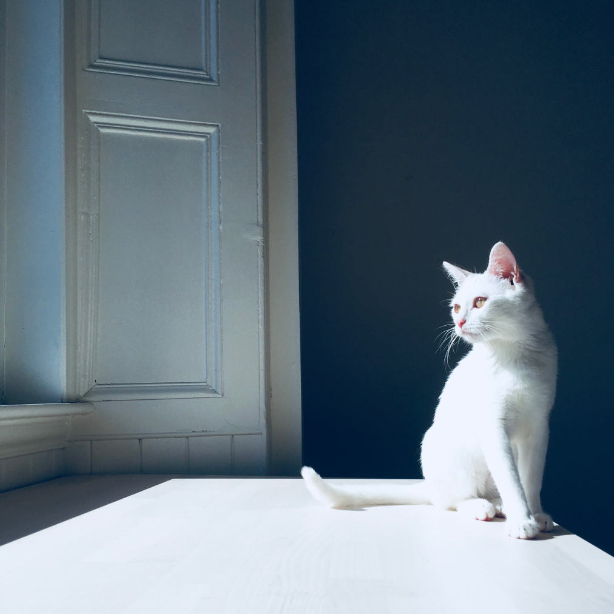

#health

Cats are marvellous creatures, and helpful; they are a daily reminder for us to play, and rest. Unlike the dog, cats are perceived as intelligent, clean and independent – which might be why they resonate with our personal aspirations. To a cat person anyway.